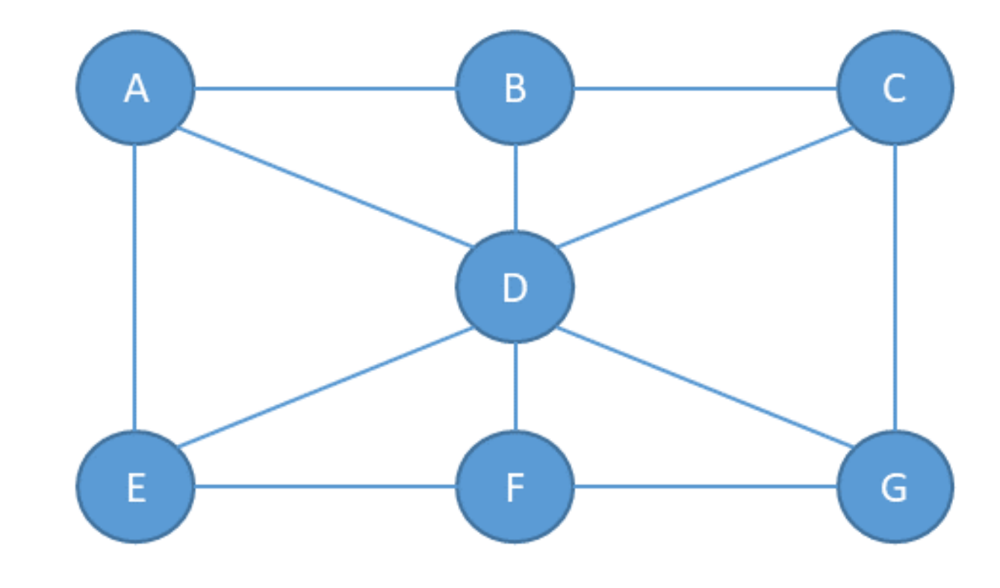
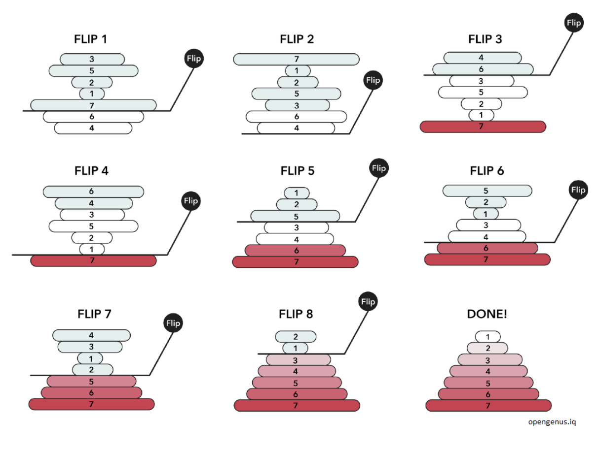
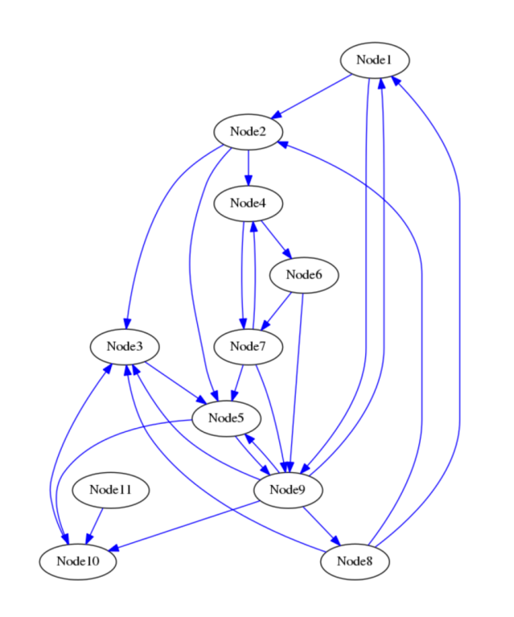

Midterm 2023_12_19
Exercises
Exercise 1 [Theory]
Describe the differences between the Depth-First and the Breadth-First Search algorithms for visiting graphs. Then, apply the DFS to the graph below.

Exercise 2 [Theory]
Given a sorted list L of n elements, please compute the asymptotic computational complexity of the following fun function, explaining your reasoning.
def fun(L):
if len(L)== 1:
return L[0]
return max(L[0],fun(L[1:]))
Remember that the slicing operator creates a new list to store the sliced elements.
Exercise 3 [Lab]
Implement the sort() method of the class PancakeSort in the file exercise3.py . To test the
implementation, execute the file exercise3.py, which is already equipped with a main
code that tests the method by sorting the list [7, 5, 10, -11, 3, -4, 99, 1].
Imagine you have a stack of pancakes of different sizes, and you want to arrange them in
order from the largest at the bottom to the smallest at the top. Here's how Pancake Sort
works:
Start with your stack of unsorted pancakes. The stack represents the list of numbers that
you want to sort (it is not an actual stack data structure).
- Iterate over the stack of pancakes (list of numbers) starting from the bottom pancake (end of the list) and going towards the top (first pancake). This because at the end of each iteration the biggest pancake (number) will be moved to the bottom of the stack (last position in the list), and we want to reduce the size of the list we work with at each iteration.
- At each iteration, identify the biggest pancake ( number ) and get its position X.
- If the biggest pancake is not already at the top, flip the unsorted stack to move it there (in the first position of the list). This means that you must flip the sub-list that goes from 0 to position X.
- Now, flip the entire stack (list) so that the biggest pancake is now at the bottom (end of the list).
- Repeat the process, focusing on a smaller stack each time (excluding the pancake you've already sorted, which is now at the end).
- Continue until all pancakes are in order (i.e. when you reach the first position in the list)
Keep in mind that with flip we mean to reverse the order of the elements in the list (or sub-list). Below there is an example of how the sorting works:

Exercise 4 [Lab]
Consider the DiGraphAsAdjacencyMatrix class provided in the file exercise4.py implementing a directed graph by adjacency matrix. Implement the two missing methods:
-
getNumberOfConnectedNodes(mynode, modality): that returns the number of nodes that connect to the node mynode, if mynode exists. The method supports two modalities: when modality = 1, only incoming edges are considered, when modality = 2, only outgoing edges are considered. The code should print an error message and return 0 when mynode does not exist or when the method modality is not supported (values different from 1 and 2). -
getAverageNumberOfEdgesPerNode(): that returns the average number of edges per node in the graph. To implement this method, you are allowed to use the method at point 1 if this helps. To test the implementation, execute the file exercise4.py, which already has a main code and tests the methods on the following graph:

Solutions
Exercise 3
import random
class SortingAlgorithm:
def __init__(self, data, verbose = True):
self.data = data
self.comparisons = 0
self.operations = 0
self.verbose = verbose
def getData(self):
return self.data
def getOperations(self):
return self.operations
def getComparisons(self):
return self.comparisons
def sort(self):
raise NotImplementedError
class pancakeSort(SortingAlgorithm):
def flip(self, i):
self.data[:i+1] = reversed(self.data[:i+1])
def max_index(self, max_pankcake):
cur_max = 0
for i in range(1,max_pankcake+1):
if self.data[i] > self.data[cur_max]:
cur_max = i
return cur_max
def sort(self):
"""
Implement the Pancake Sort algorithm
"""
n = len(self.data)-1
for big_flip in range(n, 0, -1):
# Find the index of the maximum element in self.data[0..curr_size-1]
mi = self.max_index(big_flip)
# Move the maximum element to end of current self.dataay if it's not already there
# Flip the self.data from 0 to max element index
self.flip(mi)
# Flip the whole self.data
self.flip(big_flip)
return self.data
if __name__ == "__main__":
d = [7, 5, 10, -11 ,3, -4, 99, 1]
print(d)
insSorter = pancakeSort(d)
insSorter.sort()
print(d)
Exercise 4
class DiGraphAsAdjacencyMatrix:
def __init__(self):
self.__nodes = list()
self.__matrix = list()
def __len__(self):
"""gets the number of nodes"""
return len(self.__nodes)
def __str__(self):
header = "\t".join([n for n in self.__nodes])
data = ""
for i in range(0,len(self.__matrix)):
data += str(self.__nodes[i]) + "\t"
data += "\t".join([str(x) for x in self.__matrix[i]]) + "\n"
return "\t"+ header +"\n" + data
def insertNode(self, node):
#add the node if not there already.
if node not in self.__nodes:
self.__nodes.append(node)
#add a row and a column of zeros in the matrix
if len(self.__matrix) == 0:
#first node
self.__matrix = [[0]]
else:
N = len(self.__nodes)
for row in self.__matrix:
row.append(0)
self.__matrix.append([0 for x in range(N)])
def insertEdge(self, node1, node2, weight):
i = -1
j = -1
if node1 in self.__nodes:
i = self.__nodes.index(node1)
if node2 in self.__nodes:
j = self.__nodes.index(node2)
if i != -1 and j != -1:
self.__matrix[i][j] = weight
#---------------------------------------#
# do not edit code above this line!
#---------------------------------------#
def getNumberOfConnectedNodes(self, mynode, modality):
"""
modality = 1 uses only incoming edges;
modality = 2 uses only outgoing edges;
Print an error message and return 0 when mynode does not exist or
when the method modality is not supported.
"""
ret = 0
i = -1
if mynode in self.__nodes:
i = self.__nodes.index(mynode)
# if the node is present
if i != -1:
# outgoing edges
if modality == 2:
for e in range(len(self.__matrix[i])):
if self.__matrix[i][e] != 0:
ret +=1
# incomming edges
elif modality == 1:
for e in range(len(self.__matrix)):
if self.__matrix[e][i] != 0:
ret +=1
else:
print(f"ERROR: Modality {modality} is not supported")
else:
print(f"ERROR: {mynode} does not exist")
return ret
def getAverageNumberOfEdgesPerNode(self):
"""
returns average number of edges per nodes in the graph
"""
edge_avg = []
for node in self.__nodes:
in_e = self.getNumberOfConnectedNodes(node, 1)
out_e = self.getNumberOfConnectedNodes(node, 2)
edge_avg.append(in_e+out_e)
return sum(edge_avg)/len(edge_avg)
if __name__ == "__main__":
G = DiGraphAsAdjacencyMatrix()
for i in range(11):
n = "Node_{}".format(i+1)
G.insertNode(n)
G.insertEdge("Node_1", "Node_9", 5)
G.insertEdge("Node_1", "Node_2", 2)
G.insertEdge("Node_2", "Node_4", 1)
G.insertEdge("Node_2", "Node_5", 3.5)
G.insertEdge("Node_2", "Node_3", 2)
G.insertEdge("Node_3", "Node_5", 2)
G.insertEdge("Node_4", "Node_6", 1)
G.insertEdge("Node_4", "Node_7", 2)
G.insertEdge("Node_5", "Node_10", 3)
G.insertEdge("Node_5", "Node_9", 1)
G.insertEdge("Node_6", "Node_7", 1)
G.insertEdge("Node_6", "Node_9", 2)
G.insertEdge("Node_7", "Node_4", 2)
G.insertEdge("Node_7", "Node_5", 1)
G.insertEdge("Node_7", "Node_9", 3)
G.insertEdge("Node_8", "Node_3", 4)
G.insertEdge("Node_8", "Node_2", 7)
G.insertEdge("Node_8", "Node_1", 7)
G.insertEdge("Node_9", "Node_1", 5)
G.insertEdge("Node_9", "Node_3", 4)
G.insertEdge("Node_9", "Node_5", 1)
G.insertEdge("Node_9", "Node_8", 1)
G.insertEdge("Node_9", "Node_10", 4)
G.insertEdge("Node_10", "Node_3", 3)
G.insertEdge("Node_11", "Node_10", 1)
print("Size is: {}".format(len(G)))
print("\nMatrix:")
print(G)
#PART 1
print("\nPART 1:\n")
nodes = ["Node_3", "Node_7", "Node_11"]
print("\n-> modality 1 test:")
for n in nodes:
n_e = G.getNumberOfConnectedNodes(n, 1)
print(f"\t{n} has {n_e} incoming links.")
print("\n-> modality 2 test:")
for n in nodes:
n_e = G.getNumberOfConnectedNodes(n, 2)
print(f"\t{n} has {n_e} outgoing links.")
print("\n-> invalid cases:")
n_e = G.getNumberOfConnectedNodes("Node_27", 2)
print(f"\tNode_27 has {n_e} outgoing links.")
n_e = G.getNumberOfConnectedNodes("Node_27", 3)
print(f"\tNode_27 has {n_e} outgoing links.")
# some asserts
assert G.getNumberOfConnectedNodes("Node_11", 1) == 0
assert G.getNumberOfConnectedNodes("Node_4", 1) == 2
assert G.getNumberOfConnectedNodes("Node_4", 2) == 2
#PART 2
print("\nPART 2:\n")
print(f"Average number of edges per node in the graph: {G.getAverageNumberOfEdgesPerNode()}\n")
assert G.getAverageNumberOfEdgesPerNode() == 4.545454545454546